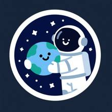

Entity Layout — A flat-style badge design shows a happy astronaut hugging a small plan
A flat-style badge design shows a happy astronaut hugging a small planet on the left. They all smile and the background is the deep universe.
Direct — one call, no iterationContinuum — Qwen3.8-27B + Qwen-Image
Judge — Direct
FAILEntity Layout - Two-Dimensional Space — The image shows an astronaut hugging a small planet, but this group is located in the center of the frame, not on the left side as specified by the prompt.
PASSStyle — The image is created in a flat style, utilizing solid colors, simple geometric shapes, and clean lines without complex textures or gradients. The composition is self-contained, resembling a badge design.
FAILGrammar - Consistency — The astronaut has a visible smiling expression. The planet, however, is depicted without any facial features and is not smiling. Therefore, the condition that 'they all smile' is not met.
PASSAction - Contact Interaction — The astronaut is depicted with its arms wrapped around the planet, which is a clear visual representation of a hugging action.
PASSAttribute - Expression — The astronaut's face is visible through the helmet, showing a wide, open-mouthed smile and closed, curved-up eyes, which is an expression of happiness.
Judge — Continuum
PASSEntity Layout - Two-Dimensional Space — The image shows an astronaut on the right side of the frame, holding a small planet. The planet is positioned to the left of the astronaut, which aligns with the prompt's requirement for the planet to be on the left.
PASSStyle — The image is rendered in a flat style, characterized by solid colors, simple shapes, and a lack of complex gradients or textures. The entire composition is enclosed in a white circular border, giving it the appearance of a badge.
PASSGrammar - Consistency — Both the astronaut and the small planet are depicted with smiling faces. The astronaut's helmet visor displays a simple smiling face, and the planet also has a face with a clear smile.
PASSAction - Contact Interaction — The astronaut's arms are wrapped around the small planet, holding it close to its body, which visually represents the action of hugging.
PASSAttribute - Expression — The astronaut's face, visible through the helmet's visor, features a simple upward-curved line for a mouth and two dots for eyes, which clearly depicts a happy expression.
What the agent did
Thinking
Let me carefully analyze this prompt: "A flat-style badge design depicts a happy astronaut hugging a small planet on the left side. Everyone is smiling, and the background is a deep cosmic space." Interpretation: A flat-style (flat design) badge. A happy astronaut hugging a small planet. The planet is on the left side (meaning the astronaut is on the right, and the astronaut is hugging the planet on the left? Or is the whole scene on the left of the badge?). "Everyone is smiling" — the astronaut is smiling, and probably the planet has a smile too (the "everyone" suggests both the astronaut and the planet are smiling, meaning the planet has a face). Background: deep cosmic space. So what needs to be created: A circular badge design (badges are usually circular), flat design style, deep cosmic space background (dark navy/purple with stars), a small smiling planet on the left, and on the right a happy smiling astronaut hugging the planet. Flat illustration style. The badge should probably be circular, placed in the center of the image. Since it's a badge design, a circular badge with a rim/border. Let me try generating it. Prompt to the generator: "Flat vector illustration badge, circular badge design, deep cosmic space background in dark navy with small stars and a faint crescent moon, a cute smiling small planet with a ring on the left side, a happy smiling astronaut in a white spacesuit hugging the planet from the right, flat design style, clean simple shapes, no gradients, bright colors, badge with a circular border rim, centered on a dark background" Let me make the badge itself stand out. The image is probably 1024x1024. The badge is a circle occupying most of the frame, and the area outside the circle is a dark background, or the entire image becomes the badge. "Badge design" — a circular badge is the safest bet. Let me try generating: "A flat-style vector badge design, a large circular badge centered on a dark background. Inside the badge: deep cosmic space in dark navy blue with scattered white stars. A cute small planet on the left with a happy smiley face and a ring, and a happy smiling astronaut in a white helmet and spacesuit hugging the planet from the right, arms wrapped around it. Flat design, minimal detail, clean geometric shapes, no outlines or simple outlines, soft pastel colors, playful and cute." Then inspect, and edit as necessary. Let's get started.
Step 1 — `generate_image`
{
"prompt": "Flat-style vector badge design: a large circular badge centered on a dark background. Inside the badge, a deep space universe background in dark navy blue with scattered small white stars. A cute small planet with a happy smiling face on the left, and a cheerful smiling astronaut in a white spacesuit and helmet hugging the planet from the right, arms wrapped around it. Flat design, clean simple geometric shapes, no gradients, playful cute style, subtle lighter rim border around the circular badge.",
"model": "qwen-image"
}
Result img_0

Thinking
The generated image is actually very good. Let me evaluate it against the prompt: 1. Flat-style badge design ✓ — circular badge with white rim, flat vector style 2. Happy astronaut hugging a small planet ✓ — astronaut is hugging the planet 3. Planet is on the left ✓ — planet is on the left, astronaut on the right 4. Everyone smiling ✓ — both the astronaut and the planet have smiley faces 5. Deep-space background ✓ — dark navy with stars This looks like a solid result. Let me use inspect_region to check the details and confirm the faces and hugging look good. Let me check the astronaut's face and the planet's face. Actually, looking at the image, everything seems to match. Let me zoom in to confirm the details — the astronaut's smile, the planet's smile, the hugging pose. Let me check the faces.
Model
The first generation looks strong. Let me verify the fine details — the faces and the hug — before deciding if anything needs fixing.
The details look clean: - The planet has a nice smiley face (dot eyes and a smiling mouth) - The astronaut has a smiley face visible through the helmet (dot eyes, smiling mouth) - Flat design style - Deep space with stars in the background - The planet is on the left, and the astronaut is on the right hugging it All the elements of the prompt are present and accurate: 1. Flat-style badge design ✓ 2. Happy astronaut ✓ (smiling) 3. Hugging a small planet ✓ (arms wrapped around it) 4. Planet on the left ✓ 5. Everyone is smiling ✓ (both the astronaut and the planet) 6. Deep space background ✓ This is a good result. I'll mark it as the best and stop. There's no need to keep editing just to chase a marginal improvement.
Model
The details have been verified: both the planet and the astronaut have clean, cheerful smiley faces, the astronaut's arm is hugging the planet, and the flat style and deep-space background with stars are all correct. All the elements of the prompt are present — the flat badge design, the planet on the left, the smiling astronaut hugging it, and the deep-space background. This is ready to go.
Step 3 — `mark_best`
{
"image": "img_0",
"reason": "All prompt elements present and correct: flat circular badge, deep-space starry background, smiling planet on the left, happy smiling astronaut hugging it from the right. Faces verified clean at source resolution."
}
Thinking
The mark has been set. The image satisfies all the requirements of the prompt. Time to stop and summarize.
Model
The badge design is complete and marked as the best result. Here's what it delivers: - **Flat-style badge** — a clean circular badge with a white rim on a dark backdrop, rendered in simple flat vector shapes with no gradients - **Happy astronaut hugging a small planet** — the astronaut (right) wraps its arms around the little planet - **Planet on the left** — a blue-and-green globe positioned on the left side - **They all smile** — verified up close: both the astronaut (through the visor) and the planet have cheerful dot-eye smiley faces - **Deep universe background** — dark navy space filled with small stars and dots No edits were needed — the first generation matched the prompt on every element.